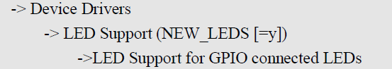
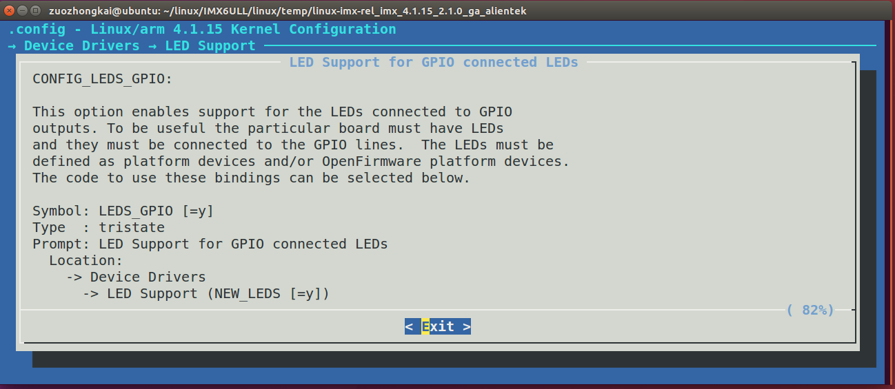
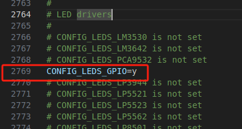
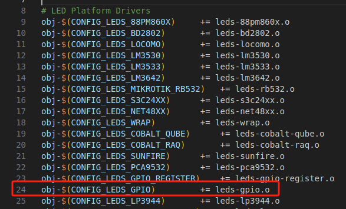
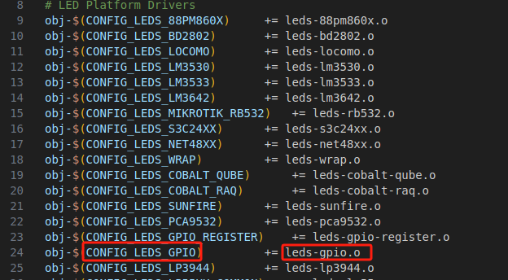

驱动开发-图形化编译内核与系统自带驱动的添加
1.配置linux自带的驱动使能
1.1图形化配置
要使用 Linux内核自带的 LED灯驱动首先得先配置 Linux，输入如下命令打开 Linux配置菜单：
1 | make menuconfig |
按照如下路径打开 LED驱动配置项：

按照上述路径，选择“ LED Support for GPIO connected LEDs”，将其编译进 Linux内核，也即是在此选项上按下“ Y”键，使此选项前面变为 “<*>”：
在“ LED Support for GPIO connected LEDs”上按下 可以打开此选项的帮助信息，
1 | make -j16 |
1.2.config文件查看
配置 好 Linux内核以后退出配置界面，打开 .config文件，会找到“ CONFIG_LEDS_GPIO=y这一行，如图 56.1.3所示：

1.3Makefile文件
LED灯驱动文件为 /drivers/leds/leds-gpio.c，大家可以打开 /drivers/leds/Makefile这个文件，

如果定义了 CONFIG_LEDS_GPIO的话就会编译 leds-gpio.c这个文件，在上一小节我们选择将 LED驱动编译进 Linux内核，在 .config文件中就会有“ CONFIG_LEDS_GPIO=y这一行，因此 leds-gpio.c驱动文件就会被编译。
2.反推驱动配置
2.1查找驱动
网络查找到驱动的代码如leds-gpio.c
2.2找到makefile
找到配置的名称

2.3图形化配置搜索
3.设备树节点编写
Documentation/devicetree/bindings/leds/leds-gpio.txt，此文档详细的讲解了 Linux自带驱动对应的设备树节点该如何编写，我们在编写设备节点的时候要注意以下几点：
①创建一个节点表示 LED灯设备，比如 dtsleds，如果板子上有多个 LED灯的话每个 LED灯都作为 dtsleds的子节点。
②dtsleds节点的 compatible属性值一定要为“ gpio-leds”。
③设置 label属性，此属性为可选，每个子节点都有一个 label属性， label属性一般表示LED灯的名字，比如以颜色区分的话就是 red、 green等等。
④每个子节点必须要设置 gpios属性值，表示此 LED所使用的 GPIO引脚！
⑤可以设置“ linux,default-trigger”属性值，也就是设置 LED灯的默认功能，可以查阅Documentation/devicetree/bindings/leds/common.txt这个文档来查看可选功能，比如：
1 | backlight LED灯作为背光。 |
⑥可以设置“ default-state”属性值，可以设置为 on、 off或 keep，为 on的时候 LED灯默认打开，为off的话LED灯默认关闭，为keep的话LED灯保持当前模式。
例子：
1 | run-control { |